Visual identity redesign / 2022
Pixophone Rebrand
A retail identity refresh for a smartphone, accessories and repair brand. The project turns a dated literal logo into a cleaner mascot-led system for signage, print, social media and digital touchpoints.

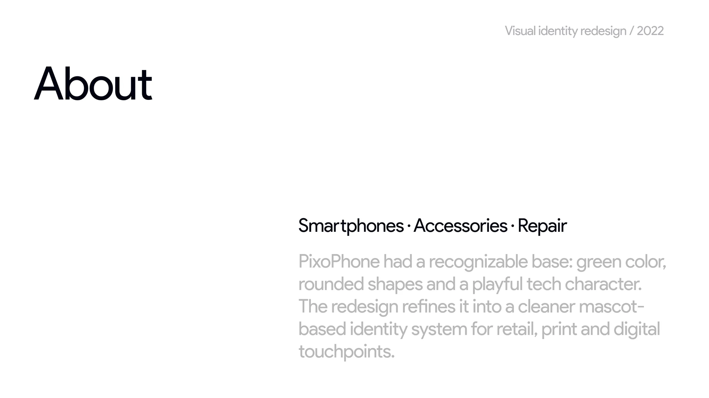
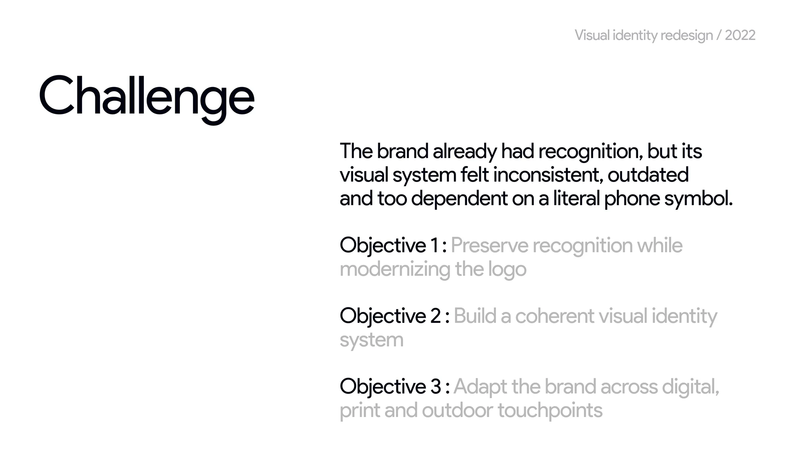
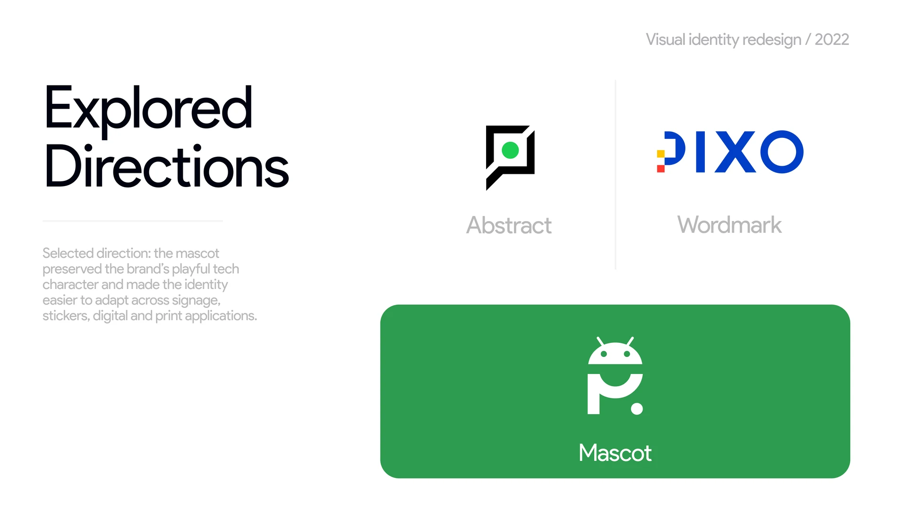
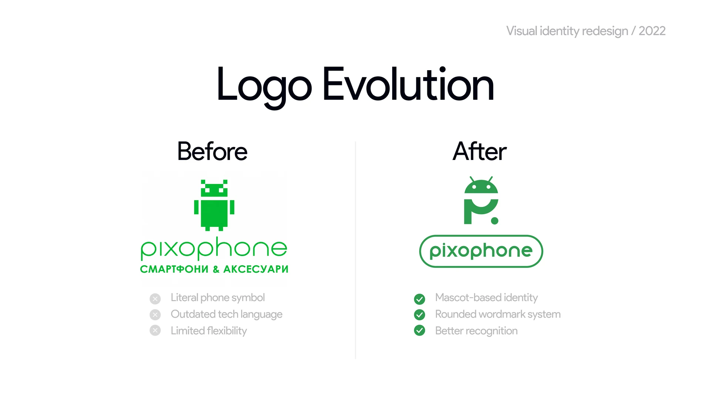
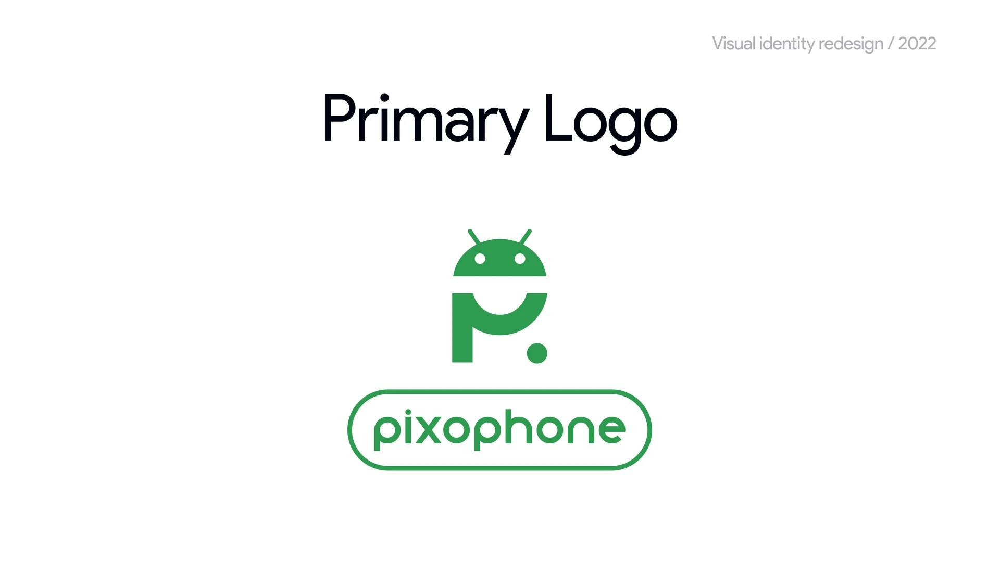
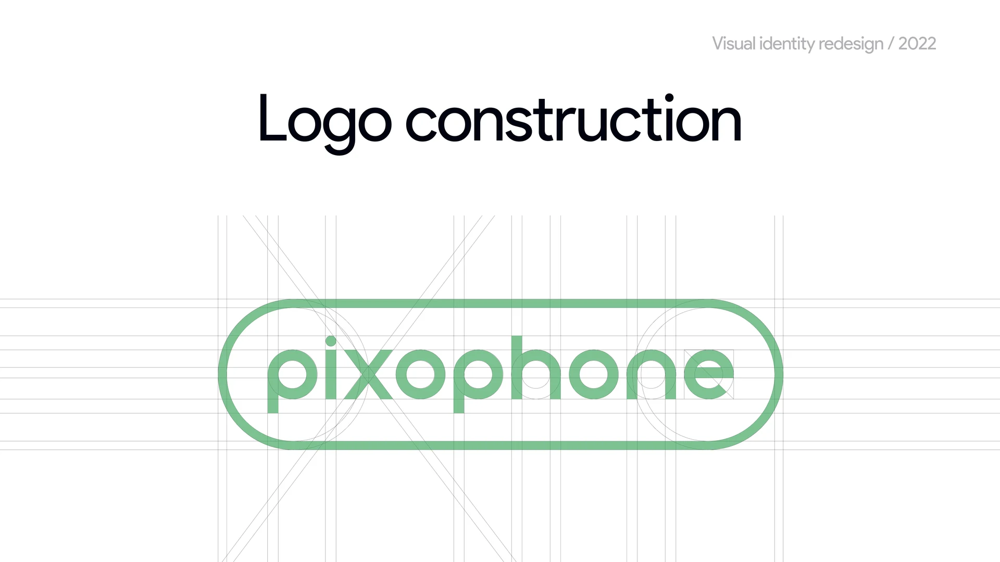
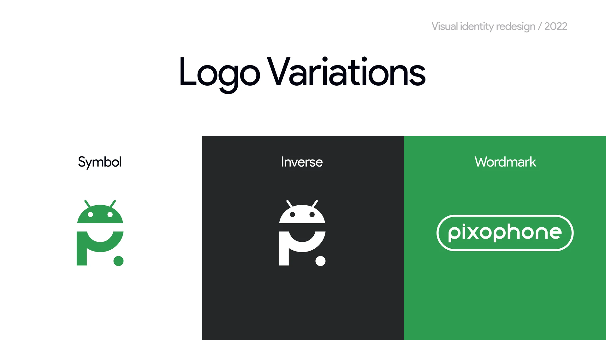
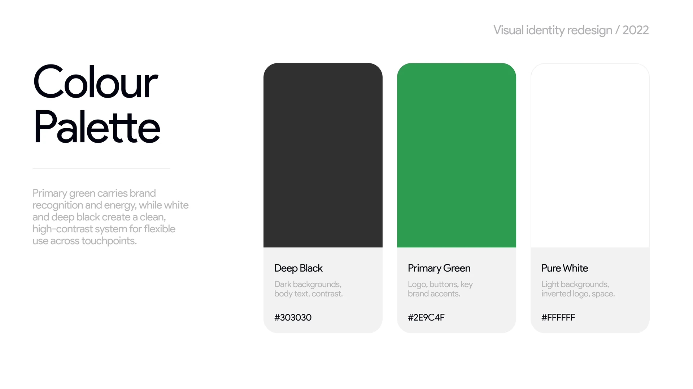
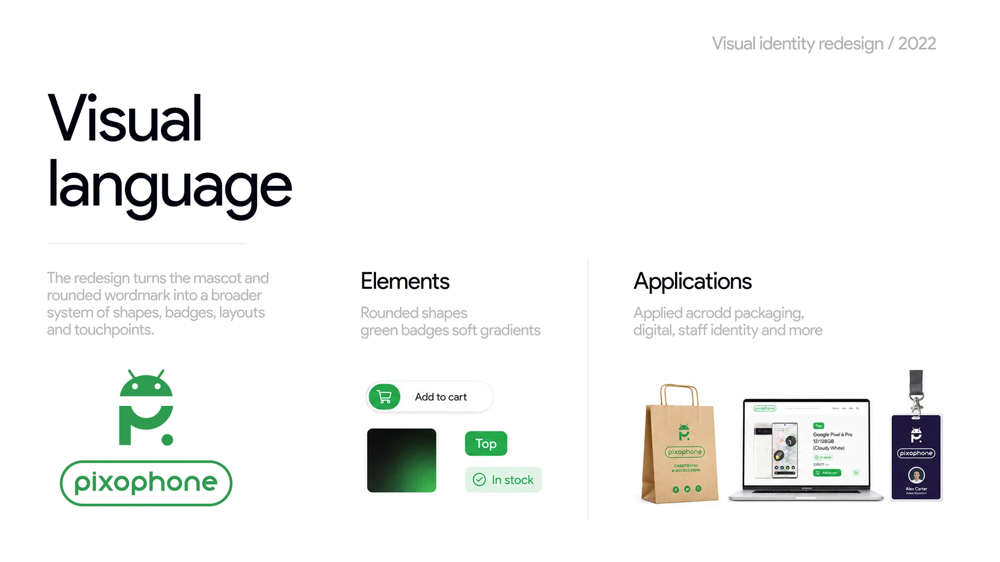

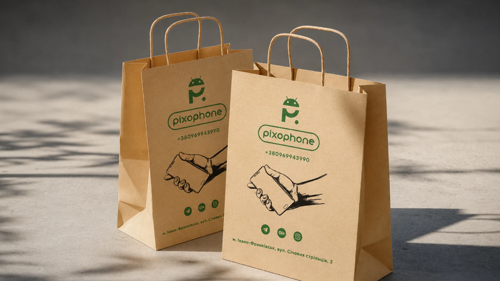
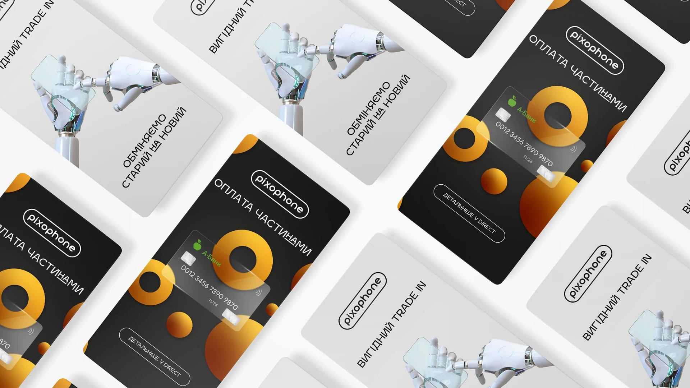
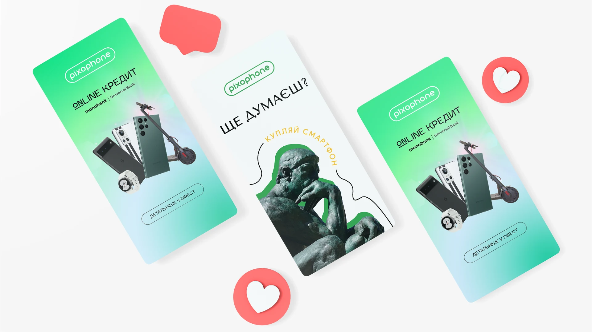
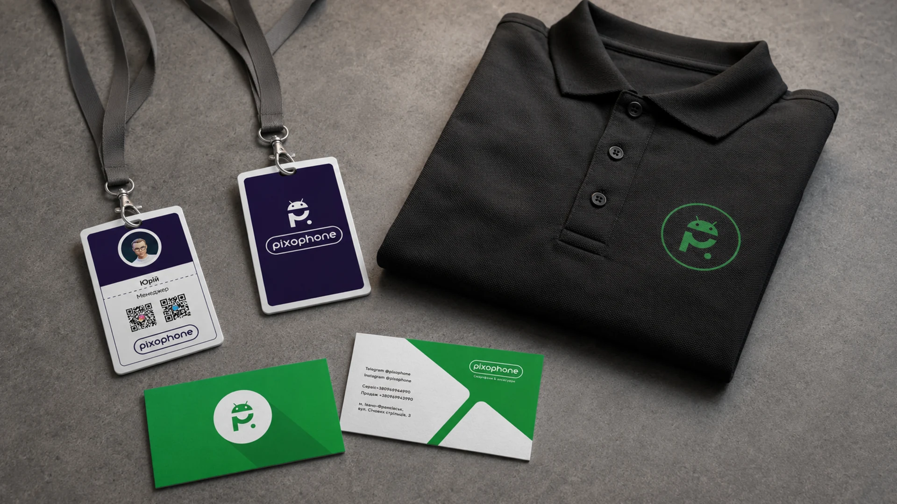
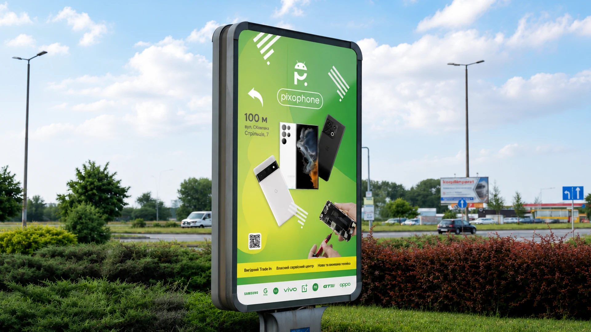
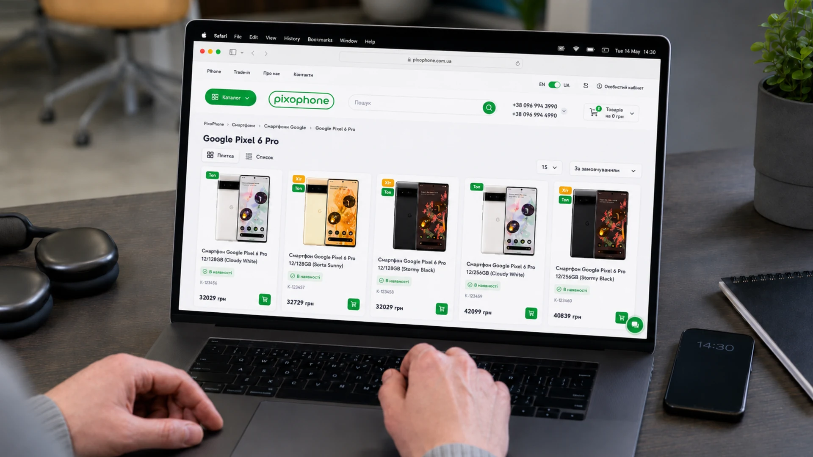
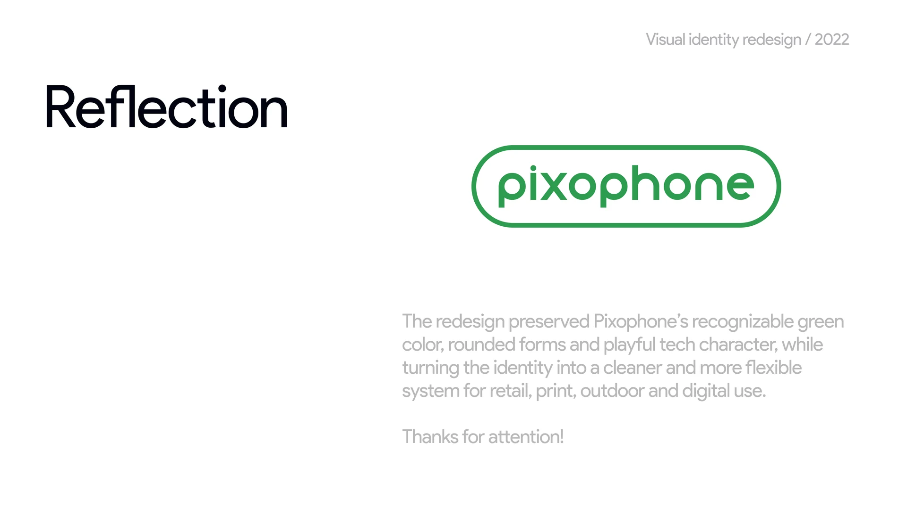